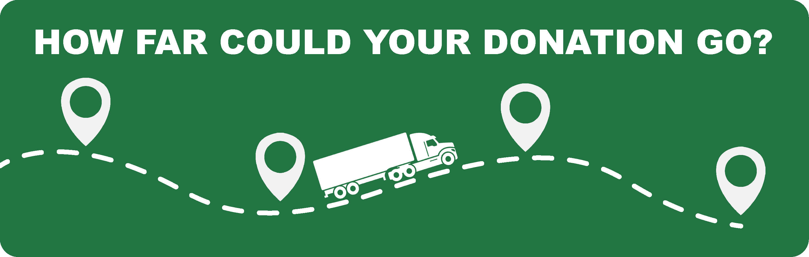

The Equipment Is Donated,
But the Journey Isn't Free.
How Far Could Your Donation Go?
Every day, valuable medical supplies and equipment are given a second life through Partners for World Health. But getting those supplies from healthcare facilities across New England to communities around the world takes more than donations of equipment.
It takes people, transportation, resources, and a whole lot of dedication.
Come along for the journey and see how local efforts create global impact.
Every Mile Matters.
Our healthcare partners donate essential supplies. Our volunteers donate their time and energy. But there are still costs involved in getting those supplies where they need to go.
From fueling trucks for pickups across New England to preparing equipment for shipment overseas, your financial support helps keep the entire process moving.
And sometimes, making a global difference starts with a tank of gas.

$25
Maine
Keeping it local!
$50
New Hampshire
Across the Piscataqua!
$100
Massachusetts
Boston bound!
$150
Connecticut
Next stop: Hartford!
Illustrative giving amounts. Actual transportation costs and routes vary.
Ready to Make a Difference?
Help keep donated medical supplies moving!